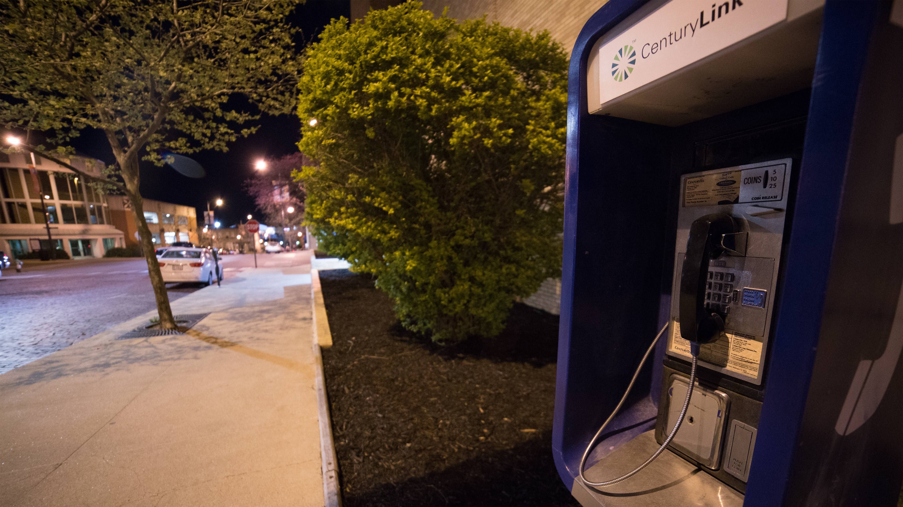

The first time I heard the payphone on Cherry Street and Sixth in downtown Columbia ring, it was 2 a.m. Rhe street was totally empty, and I started freaking out—not because I was scared, but because I had heard about this phone.
It has been ringing in the middle of the night for eight years now, confusing and enticing late-night passersby into answering it. It’s a piece Columbia nightlife folklore. That’s how I came to hear of the payphone — friends who answered it and talked to drunk girls and people pretending to be Santa Claus on the other end. When I answered the phone myself, I heard what a lot of people hear:
“Hello? Come to Harpo’s, it’s really fun”
My best guess was the number to the payphone was written on a bathroom stall at Harpo’s, the bar right down the street. That wouldn’t be too surprising, especially if it had “payphone” written next to it.
But something about the phone call was off; it didn’t sound like someone who had just discovered the number on accident. So I Googled something like “payphone columbia mo harpo’s.”
A few pages in was a link to a Wiki — like Wikipedia, but for a single topic — just for soundboard prank calls. It said this:
“Nomadcowatbk is a prank caller who has been active on YouTube since July 2008.”
And then a little further down: “His calls to the payphone at Harpo’s in Columbia, Missouri, for which he is perhaps best known, have lured many intoxicated college students into humorous or otherwise unusual conversations.”
A brief disclaimer: I have no way to confirm any of the stuff I’ve found online about him, because anything I can find seems to be intentionally anonymous. I’ll refer to nomadcowatbk as “he” in this story because of a few independent references I’ve found that use “him,” but I can’t be certain.
What this means is the person, who goes by the username “nomadcowatbk,” calls this one phone over and over and over again using these soundboards. He records the interactions, then uploads them to YouTube for other prank call enthusiasts to enjoy.
A soundboard is basically just a collection of recorded sounds that you can click to play in any order. Prank callers create soundboards with a bunch of statements from characters, and by choosing different buttons, they try to make the soundboard characters converse, to the best of their ability, with people on the other end of a phone call. Of course, a soundboard’s lexicon is pretty limited, so if you ask too specific a question, the response often won’t match. The idea is to convince someone that they are talking to a real person, and they do a pretty good job, especially if you only hear the voice once.
Soundboards are often of celebrity voices, but the other popular types are called “victim soundboards.” Prank callers refer to people who pick up prank calls as victims, and if a victim is particularly interesting or funny or angry, the prank caller will cut their responses up to create new soundboards that they’ll then play back for other victims.
The idea is to convince someone that they are talking to a real person, and they do a pretty good job, especially if you only hear the voice once.
That’s something this prank caller, nomadcowatbk, has done. Initially, he made calls to a bank of payphones inside the bar at Harpo’s. But those phones were removed around 2010 when the bar changed management, so nomadcowatbk shifted his focus to the outdoor payphone just down the street. He took some old conversations with drunk girls from the phones inside the bar and turned them into a soundboard, and that’s why they are so specific to tell you to come there.
Nathan Lawrence / KBIA News
From a prank calling perspective, he seems to have a pretty good thing going. He works a phone in a place and time where most of the foot traffic is at various states of inebriation. This makes them more likely to answer the phone, and more likely to be entertaining.
I don’t know how many of the nearly 900 videos nomadcowatbk has posted on his YouTube account are from this phone, but it seems to be the source of a lot of them. They all have names like “Earth day drunk dialing” and “Santa Claus and drunk girls call the payphone near the bar” and “demonic racist and his newest minions call the payphone.” Those are some of the more tasteful ones. Some of the calls even get pretty sexually explicit.
I learned what I could from the Internet about this guy and his hobby, but if I was going to get anywhere real, I needed to talk to him. I hadn’t found any contact information, but I did know of one pretty direct source. I headed out to the payphone after midnight, answered it a couple of times and then told the soundboard (and the person on the other side) that I was a radio reporter and I was interested in talking to them.
I asked him to give me a call, not sure what the consequences would be. But, I got a call within the hour from none other than one of the drunk girl soundboards. That conversation didn’t go very far.
Another time I answered the payphone and asked if he would talk to me, he called my phone and I didn’t answer, but I got a recorded message of a song from a ‘90s cartoon called Animaniacs:
“I am a lab mouse, I escaped from my cage, never had a job, never earned minimum wage. But you will respect me once my plan is unfurled. You will call me your leader I’ll be king of the world.”
So, that seemed to be a dead end. But I needed to understand what was going on here, and more importantly, why?
So I found an expert. Brad Carter runs an online community called The Phone Losers of America. These days, it is mostly centered around a podcast Brad runs. But for a while it was a highly trafficked online forum for prank callers.
“I guess I got into prank calling when I was a kid, just like everyone else and the difference is that I just never quit. And now I’m old and I still do it,” Carter said.
If you ask someone who grew up in the ‘80s or ‘90s, they probably have some memories of when prank calling flourished - a time where landlines were plentiful and the internet was basically non-existent. But these days, there are other things to fill teenagers’ time, and prank calling seems to have become confined to a community of the truly dedicated.
Nomadcowatbk is a part of that community, and I found the Phone Losers when I found posts by nomadcowatbk there, where he gave out phone numbers to various payphones in mid-Missouri.
Carter isn’t really into soundboards. He mostly does prank calling using his real voice, pretending to be someone he’s not, but he says he used to use payphones a lot.
"He doesn’t seem to do anything that would get him in legal trouble. At the very least, not because of the recordings."
“I’ve just been a little obsessed with phones my entire life, so when I was in grade school I started collecting the phone numbers to payphones and it just seemed really innovative to prank call them and talk to people that answered,” Carter said.
I asked him if there were any advantages or disadvantages to using payphones for prank calling.
“Yeah I guess you couldn’t really get traced,” he said. “And you’re not technically bothering anybody because it’s a payphone. So I guess that would be an advantage.”
Carter is actually pretty responsible with his calls, which may just come from age and experience. That’s refreshing because when you start looking at this world of prank calling, it can feel pretty fast and loose. A really successful prank call will probably end in someone screaming profanities or threats. On the Phone Losers webpage, Carter put up a list of the rules of prank calling. This is stuff like “don’t make threats,” “don’t cause damage,” “don’t impersonate the police.”
“I put those up there to just kind of give a guideline to people,” he said. “Just to keep them out of trouble, mostly. But it’s nice, people actually follow them and you know it keeps them out of trouble and it makes things just happier for everyone I think.”
I don’t know if nomadcowatbk follows these rules, but he doesn’t seem to do anything that would get him in legal trouble. At the very least, not because of the recordings. Missouri is a one party consent state, which means that only one person on the call has to be aware of the recording for it to be legal.
One of Carter’s rules is “don’t prank locally,” the idea being that if authorities get involved, they might actually do something if you live down the street, but if you are a thousand miles away, it won’t be worth their time. While I can’t be sure, it does seem like nomadcowatbk is either local to mid-Missouri, or at least has a strong connection to it. I’ve found his username on a forum for fans of University of Missouri sports, posting about football and other local issues, even wondering which local bar will be the next to get torn down.
At this point, I’d pretty much tapped the internet for all there was to know about this guy, and he wasn’t reaching out to me, at least not the real person. My leads were pretty dry. I started going by the payphone at night to see if I could catch anyone who knew anything about it.
One guy who happened to be walking by the phone one night and who had answered it before assumed it was a guerrilla advertising campaign that Harpo’s and other local bars used. Most people just thought it was some drunk girls.
I was grasping at straws at this point and there was still more I needed to know. So I called the company that owns the payphone. It’s a communications company called CenturyLink, and the phone actually sits right outside its Columbia office. I figured someone there had to know about the calls — after eight years it couldn’t be a total secret. I asked the regional press person, Nancy Devinay-McNeley, to look into it, hoping for some anecdotes or maybe the phone numbers that the calls came from. Within a couple days, I heard back.
“Centurylink was not aware that the payphone we own on the 600 Block of Cherry Street in Columbia Missouri was being used for any reason other than its intended purpose,” McNeley said.
But it was the next thing she told me is what really changed the course of things.
“We have determined the payphone is no longer necessary and we’ll be removing it in the near future.”
“Centurylink was not aware that the payphone we own on the 600 Block of Cherry Street in Columbia Missouri was being used for any reason other than its intended purpose.”
I asked her how that decision was made and if my phone call triggered it.
“It did help us make that decision probably a little quicker than we would have, but we always monitor the usage so we had known for a while that there was low usage on that phone,” she said.
This was not where I was expecting things to go. Nor was it where I wanted it to. I actually contemplated trying to get the CenturyLink people to change their minds. But, on the other hand the calls are often profane, vulgar and even sometimes racist. They aren’t illegal, but they’re definitely ethically questionable. Maybe taking the phone out would be for the best.
I ramped up my efforts to find the caller. My only lifeline to nomadcowatbk was about to be ripped out from under me, literally. I left a message on the payphone again. I figured out how to send a private YouTube message. Brad Carter, the guy from Phone Losers of America, found the email address that nomadcowatbk registered on the forums with and forwarded him an email from me.
The payphone died at 2:52 p.m. about two weeks after I called Centurylink and two months after I first answered the phone. A CenturyLink technician disconnected the dial tone, and spent the following hour removing it. It was a weird funeral. A bunch of CenturyLink employees came out to watch it being removed, and though none of them wanted to speak on record, almost every one of them joked how they wouldn’t be hearing it ring nightly anymore.
I wasn’t sure what would happen after the phone was gone. Would I be harassed by the prank caller? Or would the story just be over?
It was a weird funeral. A bunch of CenturyLink employees came out to watch it being removed, and though none of them wanted to speak on record, almost every one of them joked how they wouldn’t be hearing it ring nightly anymore.
Then, more messages.
The first one came from 867-5309: “This is Jenny. Did they remove the payphone on Cherry Street across from Columbia College?”
Here’s another one I got: “Did they remove the payphone on Cherry Street across from Columbia College? I think payphones provide a valuable service in emergencies.”
I don’t know who these messages came from, because the numbers were spoofed. Spoofing is a technique that prank callers use to camouflage themselves by making it look like a call is coming from a different number. Any number, really. One message I got came from the phone number for the Missouri Republican Party. Others came from disconnected numbers. This is one of the reasons why I can’t be sure who the calls came from, but I assume they were from nomadcowatbk.
Around the same time as the messages, I got an email from someone claiming to be a friend of nomadcowatbk. They said nomadcowatbk has asked them to get in touch as he “rarely talks with anyone outside of the prank call community.”
I can’t even be sure that this friend isn’t the prankster himself, though I’m inclined to think it is a different person. The friend asked for all the info I had on the removal of the phone, and eventually started giving me a little background on the caller.
For the first time I was getting full sentences from a seemingly real person. I still wanted direct contact, so I spent about a week negotiating, trying to get him on the phone. The friend told me they would forward any messages and questions onto nomadcowatbk, but couldn’t guarantee answers. After several discouraging messages that pretty much convinced me I wasn’t going to get this guy on the phone, I settled, and sent off a list of questions.
About 24 hours later, I got an email back. I had answers, presumably from the prankster himself. He said he started this gig around 2008, and spends a couple hours on it per week. He also confirmed that his username is pronounced “no mad cow at bk,” as in “no cattle disease at Burger King.”
Most of my questions were meant to get at his motivations. I wanted to know what made him tick. He said the reason he prank calls because he is addicted to people’s reactions to the soundboards. He also said that he uses offensive soundboards are because they get the best reactions. He doesn’t seem concerned with respecting the victims. For example, Brad Carter says that if someone gets really upset on one of his phone calls, he’ll cop to the prank. Nomadcowatbk doesn’t break character. He said, “It doesn’t matter how much respect for them I have, if it’s funny I will upload the calls.”
But he does draw some lines. If a victim gives their name or number on a call, he will cut it out. He said he doesn’t want anyone else in or out of the community trying to call those people, although there’s a little personal gain there, too. The phrase he used was “spoiling the milk at the dairy.”
Because I can’t talk to the person behind nomadcowatbk directly, it’s hard to completely figure him out – I have to read between the lines a lot. My gut says he isn’t malicious, but he makes it clear his hobby is a selfish one. And, again, I can’t say for sure, but it seems like the people in the prank call community (or at least this guy and Brad) aren’t spending a lot of time ruminating on the moral implications of this thing they do. At least not beyond trying to avoid legal trouble and major damage.
I’ve spent a lot of time thinking about nomadcowatbk this payphone and everything that has happened since I first heard about it. And, honestly, I’m sad that it’s gone. Every time I pass the concrete pad where the phone used to be, I can’t help but feel that I’ve ruined this oddity in a time where oddities are hard to come by. I wish that the calls weren’t so vulgar and offensive. But still, everyone I talked to who knew about the phone was so excited to tell me about it. It’s fun to encounter something as strange as a payphone ringing in the middle of the night, even if the voice on the other end is a little gross.
As for nomadcowatbk, things have slowed down, at least temporarily. The only new videos he’s posted to YouTube since the removal are one using numbers people posted on the app Yik Yak and another called “reporter answers payphone” which is a compilation of all the times I answered the phone.
Presumably, this isn’t the end. While he lost the phone in this prime location he’d been grooming for years, there are still thousands of payphones out there, even some in Columbia, where he might be able to start fresh.
But, for nomadcowatbk, for everyone who has ever answered the payphone, and for everyone who likes a good bit of mystery — sorry.